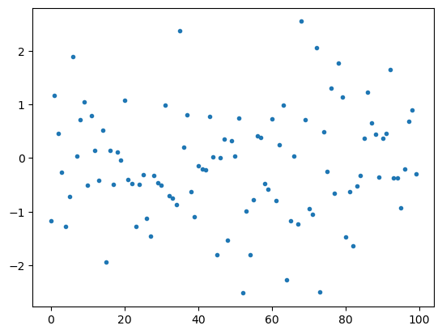

import numpy as npNB: Introducing NumPy
Programming for Data Science
What is NumPy?
NumPy stands for Numerical Python.
It is designed for high-performance numerical computing in Python.
Numerical methods are computational and data-driven techniques used to find approximate solutions to continuous mathematical processes that cannot be solved analytically.
For example, differential equations, integrals, derivatives, or optimization problems often require a numerical solution.
Because numerical methods are so important to the sciences, NumPy is the basis of what is called the scientific “stack” in Python.
Major packages in this stack include SciPy, Matplotlib, SciKitLearn, and Pandas.
Understanding what NumPy does and how it works is essential for almost anything data science related in Python.
A New Data Structure
Let’s begin with looking at NumPy’s fundamental design.
Essentially, NumPy introduces a new data structure to Python — the n-dimensional array.
Along with with this data structure, it introduces a collection of operations, functions, and methods that take advantage of this data structure.
NumPy also provides a new way of applying functions to data made possible by the data structure – vectorized functions.
Vectorized functions replace the use of loops and comprehensions to apply a function to a set of data.
NumPy also introduces a bunch of new data types.
Let’s take a look at it.
Importing the Library
To import NumPy, we typically alias it as np.
NumPy is by widespread convention aliased as np.
The ndarray
The data structure that NumPy introduces is called the ndarray.
Note we will sometimes call ndarrays just arrays.
The ndarray is a multi-dimensional array object.
Unlike Python lists, ndarrays enforce a data type among elements.
About Dimensions
The term “dimension” is ambiguous.
Sometimes it refers to the dimensions of things in the world, such as space and time.
Sometimes it refers to the dimensions of a data structure, independent of what it represents in the world.
Note that you can represent multiple world dimensions in a two-dimensional data structure — each column can be dimension in this sense.
For example, three-dimensional space can be represented as three columns in a two-dimensional table or as three axes in a data cube.
The dimensions of data structures are sometimes called axes.
Creating Arrays
There are many ways to create arrays in NumPy.
You can create them by passing plain old Pythin lists:
data1 = [6, 7.5, 8, 0, 1]
arr1 = np.array(data1)
arr1array([6. , 7.5, 8. , 0. , 1. ])From a list of lists:
data2 = [[1, 2, 3, 4], [5, 6, 7, 8]]
arr2 = np.array(data2)
arr2array([[1, 2, 3, 4],
[5, 6, 7, 8]])arr2.shape(2, 4)arr2.ndim2NumPy also offers convenience functions to initial arrays with a specific value, such as \(0\):
np.zeros(10)array([0., 0., 0., 0., 0., 0., 0., 0., 0., 0.])np.zeros((3, 6))array([[0., 0., 0., 0., 0., 0.],
[0., 0., 0., 0., 0., 0.],
[0., 0., 0., 0., 0., 0.]]).empty() will generate an array of uninitialized values.
np.empty((2, 3, 2))array([[[0.44681451, 1.63001338],
[0.21062093, 0.01193108],
[0.39271709, 0.98894578]],
[[0.62764938, 0.48666047],
[0.60804881, 0.21196292],
[0.83234622, 1.11412825]]]).arange() works like range() and will generate a sequence of numbers.
np.arange(15)array([ 0, 1, 2, 3, 4, 5, 6, 7, 8, 9, 10, 11, 12, 13, 14])We can also create new arrays with randomaly generated data.
np.random.randn() will create a new array by drawing samples from the “standard normal” distribution.
Here, we create an array of two dimensions: \(2\) rows by \(3\) columns:
np.random.randn(2, 3)array([[-0.50784086, -0.25623129, -1.47942678],
[ 1.35502514, 1.26259653, 0.19764551]])And here we use .randint to generate 20 random integers between \(1\) and \(6\):
np.random.randint(1, 7, 20)array([5, 4, 4, 1, 1, 5, 4, 2, 2, 1, 6, 6, 3, 5, 3, 3, 5, 4, 5, 2])Data Types
Unlike any of the previous data structures we have seen in Python, ndarrays must have a single data type associated with the scalar data they contain.
NumPy introduces 24 new fundamental types to describe different types of scalars.
These derive from the C programming language with which NumPy is built.

See the NumPy docs.
Here we initialize a couple of arrays as different data types (dtypes).
arr1 = np.array([1, 2, 3], dtype=np.float64)
arr1.dtypedtype('float64')arr2 = np.array([1, 2, 3], dtype=np.int32)
arr2.dtypedtype('int32')Note that dtypes are defined by a set of constants attached to the NumPy object, e.g. np.float64.
We can also refer to them as strings in some contexts, such in the constructor below:
np.array([1, 2, 3], dtype='float64')array([1., 2., 3.])Note that integer arrays default to int64:
arr = np.array([1, 2, 3, 4, 5])
arr.dtypedtype('int64')Arrays can be cast, too:
arr = np.array([3.7, -1.2, -2.6, 0.5, 12.9, 10.1])
arrarray([ 3.7, -1.2, -2.6, 0.5, 12.9, 10.1])Here we cast from floats to ints:
arr.astype(np.int32)array([ 3, -1, -2, 0, 12, 10], dtype=int32)And from strings to floats:
numeric_strings = np.array(['1.25', '-9.6', '42'], dtype=np.string_)
numeric_strings.astype(float)array([ 1.25, -9.6 , 42. ])Note that NumPy converts data types to make the array uniform:
non_uniform = np.array([1.25, -9.6, 42])
non_uniform, non_uniform.dtype(array([ 1.25, -9.6 , 42. ]), dtype('float64'))Ranges default to integers:
int_array = np.arange(10)int_arrayarray([0, 1, 2, 3, 4, 5, 6, 7, 8, 9])We can use the dtype on one array to cast another:
calibers = np.array([.22, .270, .357, .380, .44, .50], dtype=np.float64)
int_array.astype(calibers.dtype)array([0., 1., 2., 3., 4., 5., 6., 7., 8., 9.])And here is an empty array of unsigned integers:
empty_uint32 = np.empty(8, dtype='u4')
empty_uint32array([ 0, 1075314688, 0, 1075707904, 0,
1075838976, 0, 1072693248], dtype=uint32)Shape
The number and size of the dimensions of an array is called the shape of the array.
Shape is represented by a tuple, e.g. (n, m) for a 2D array.
The length of the tuple is the number of dimensions.
The values of the tuple are the number of elements in each dimension.
The shape property of the array object tells us that the array has \(2\) dimensions — the number of elements in the tuple — with \(2\) elements in the first dimension and \(3\) in the second.
Here we create an array of \(3\) dimensions:
data3 = np.random.randn(2, 3, 2)data3array([[[ 0.44681451, 1.63001338],
[ 0.21062093, 0.01193108],
[ 0.39271709, 0.98894578]],
[[ 0.62764938, 0.48666047],
[-0.60804881, -0.21196292],
[ 0.83234622, -1.11412825]]])data3.shape(2, 3, 2)1-D Matrix vs Vector
Note that there is a difference between a \(1\)-dimensional array, i.e. a vector, and a single column or row \(2\)-dimensional array, i.e. a matrix.
Consider the following example.
one_row_matrix = np.array([[1,2,3,4]])
one_d_vector = np.array([1,2,3,4])one_row_matrix, one_row_matrix.shape(array([[1, 2, 3, 4]]), (1, 4))one_d_vector, one_d_vector.shape(array([1, 2, 3, 4]), (4,))We will encounter this difference when we learn about selecting parts of arrays with indexing.
Reshaping
If we want to make it into a 1-column matrix, we need to reshape it using np.reshape().
Here we convert an array from \(3\) to \(2\) dimensions.
data3array([[[ 0.44681451, 1.63001338],
[ 0.21062093, 0.01193108],
[ 0.39271709, 0.98894578]],
[[ 0.62764938, 0.48666047],
[-0.60804881, -0.21196292],
[ 0.83234622, -1.11412825]]])data3.shape(2, 3, 2)data4 = np.reshape(data3, (4,3))
data4array([[ 0.44681451, 1.63001338, 0.21062093],
[ 0.01193108, 0.39271709, 0.98894578],
[ 0.62764938, 0.48666047, -0.60804881],
[-0.21196292, 0.83234622, -1.11412825]])Because sometimes a function wants to work with a single column (or row) matrix, and not a vector, do this to accomplish the trick:
np.reshape(one_d_vector, (-1, 1))array([[1],
[2],
[3],
[4]])np.reshape(one_d_vector, (1, -1))array([[1, 2, 3, 4]])Note the use of \(-1\) in the argument. This means use the length of the vector that is passed to it.
Transposing Arrays and Swapping Axes
Transposing is a special form of reshaping.
Arrays have the transpose method and also the special T attribute:
arr = np.arange(15).reshape((3, 5))
arrarray([[ 0, 1, 2, 3, 4],
[ 5, 6, 7, 8, 9],
[10, 11, 12, 13, 14]])arr.Tarray([[ 0, 5, 10],
[ 1, 6, 11],
[ 2, 7, 12],
[ 3, 8, 13],
[ 4, 9, 14]])arr.shape, arr.T.shape((3, 5), (5, 3))Transposing is often used when computing the dot product between two arrays.
Here’s an example.
arr = np.random.randn(6, 3)
arrarray([[ 0.11479688, 0.33156395, 0.59524203],
[ 1.15646137, -0.08704862, 0.86381333],
[-0.51155823, -1.01358134, 1.27705313],
[ 2.25510406, 0.74727944, 1.91715758],
[ 0.49557844, 0.07061821, -0.1338661 ],
[ 1.77220434, -0.88452654, 1.09233716]])np.dot(arr.T, arr)array([[10.08407358, 0.608528 , 6.60690496],
[ 0.608528 , 2.49065994, -0.71523233],
[ 6.60690496, -0.71523233, 7.61796502]])For higher dimensional arrays, transpose will accept a tuple of axis numbers to permute the axes.
Warning — this can get confusing to conceptualize and visualize!
arr = np.arange(16).reshape((2, 2, 4))
arrarray([[[ 0, 1, 2, 3],
[ 4, 5, 6, 7]],
[[ 8, 9, 10, 11],
[12, 13, 14, 15]]])arr.transpose((1, 0, 2))array([[[ 0, 1, 2, 3],
[ 8, 9, 10, 11]],
[[ 4, 5, 6, 7],
[12, 13, 14, 15]]])Simple transposing with .T is just a special case of swapping axes. ndarray has the method swapaxes which takes a pair of axis numbers:
arrarray([[[ 0, 1, 2, 3],
[ 4, 5, 6, 7]],
[[ 8, 9, 10, 11],
[12, 13, 14, 15]]])arr.swapaxes(1, 2)array([[[ 0, 4],
[ 1, 5],
[ 2, 6],
[ 3, 7]],
[[ 8, 12],
[ 9, 13],
[10, 14],
[11, 15]]])Example: The Normal Equation
Sometimes, you need to convert vectors into 1-column matrices to make certain linear algebraic functions work.
Consider two random variables, \(x\) and \(y\), represented as 1-dimensional arrays (vectors).
x = np.random.randn(100)
y = np.random.randn(100)xarray([-1.16413841, 1.16865536, 0.4525609 , -0.2722449 , -1.27289815,
-0.71810371, 1.883716 , 0.03320101, 0.71014505, 1.04896451,
-0.50324909, 0.79188057, 0.13946271, -0.42061852, 0.51837663,
-1.93336155, 0.13682373, -0.49900861, 0.11101955, -0.043336 ,
1.08324475, -0.40746863, -0.47573543, -1.27514158, -0.49048658,
-0.31183165, -1.11826591, -1.45995636, -0.32890325, -0.45732548,
-0.50317275, 0.9888555 , -0.70226293, -0.74463256, -0.8641995 ,
2.38039087, 0.19828622, 0.80782525, -0.63194502, -1.09783542,
-0.14037333, -0.2037294 , -0.22198999, 0.76775486, 0.02113618,
-1.79746008, 0.00301634, 0.35150085, -1.53745733, 0.32611821,
0.03922539, 0.75065704, -2.52018155, -0.9952756 , -1.79767193,
-0.77861022, 0.40698474, 0.38372067, -0.47768404, -0.57599198,
0.73162153, -0.79905799, 0.24235914, 0.99268306, -2.27122081,
-1.17120308, 0.03414284, -1.22661171, 2.54755592, 0.71555315,
-0.94570815, -1.04452765, 2.0568699 , -2.50169467, 0.49334793,
-0.25377387, 1.30137339, -0.65796591, 1.76859461, 1.13154259,
-1.47131984, -0.63181831, -1.64419554, -0.51849102, -0.32154684,
0.36314129, 1.22479289, 0.65814452, 0.44473066, -0.36370147,
0.37352288, 0.46538978, 1.64700262, -0.3771522 , -0.37349846,
-0.93680174, -0.20787435, 0.68835535, 0.8968693 , -0.29039299])from matplotlib.pyplot import plot
plot(x, linestyle='None', marker='.');
We can fit a regression line using the normal equation, which appears in this week’s homework.
\(\begin{aligned} \hat\beta_i=(x^Tx)^{−1}x^Ty \end{aligned}\)
Here is a standard way of expressing it in NumPy:
get_beta1 = lambda x, y: (np.linalg.inv(x.T.dot(x))) * (x.T.dot(y))However, it will fail if we pass it our two variables, x and y.
The reason is that it expects x to be a matrix, since it is designed to handle n-dimension predictor variables, usually represented as \(\textbf{X}\).
x.shape, y.shape((100,), (100,))get_beta1(x, y)LinAlgError: 0-dimensional array given. Array must be at least two-dimensionalThe revised function will work with a vector as x:
\(\hat\beta_i = \large\frac{1}{x^Tx} \small(x^Ty)\)
get_beta2 = lambda x, y: (1 / x.T.dot(x)) * (x.T.dot(y))get_beta2(x, y)0.06399264800571315We can fix the problem in the general case by converting our vector into a 1-column matrix using np.reshape().
x_as_matrix = np.reshape(x, (-1, 1))get_beta1(x_as_matrix, y)array([[0.06399265]])get_beta1(x_as_matrix, y)[0][0]0.06399264800571315get_beta1(x_as_matrix, y)[0][0] == get_beta2(x, y)True